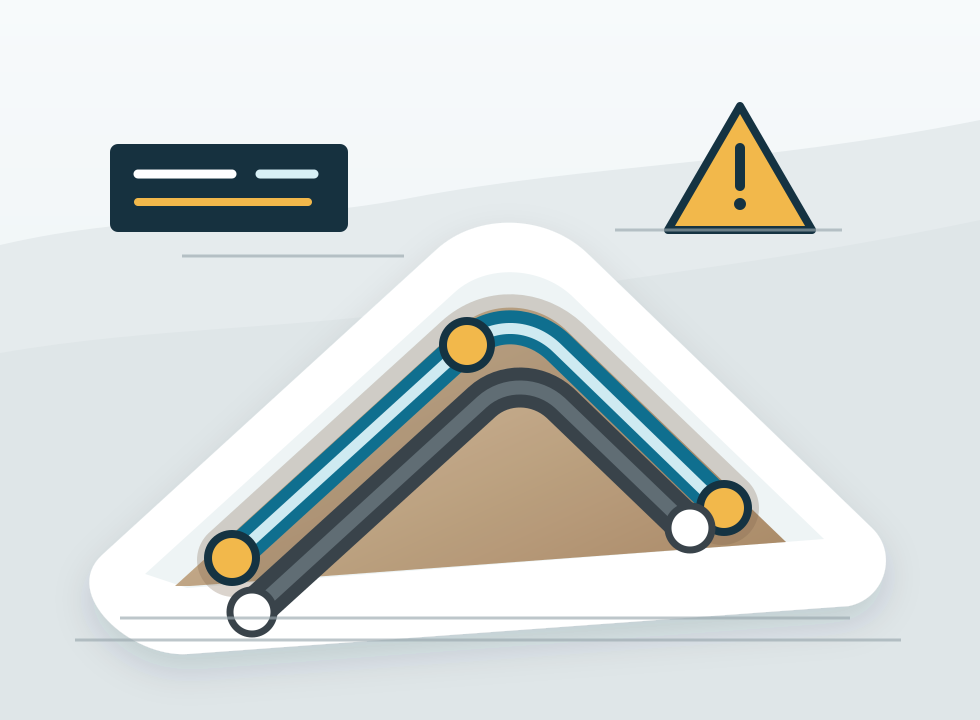

External water lines
Construction, repair and replacement of water supply routes for streets, properties and construction sites.
External water and sewer networks
Construction, repair and replacement of external water supply and sewer networks for streets, properties, construction sites and larger projects.

Focus
The service is positioned for sites where technical judgment, routes, access, materials and proper planning matter.
Construction, repair and replacement of water supply routes for streets, properties and construction sites.
Sewer routes, inspection points and connections based on terrain and project conditions.
Site networks, streets, properties, construction areas and agreed projects across the country.
Working method
External water and sewer work can vary significantly depending on access, depth, surface, materials, existing infrastructure and machinery requirements. That is why pricing is confirmed after inspection.
For larger projects and agreed scopes, work across Bulgaria can also be discussed.